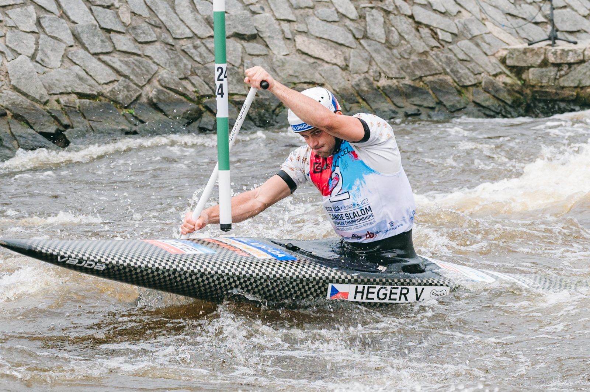
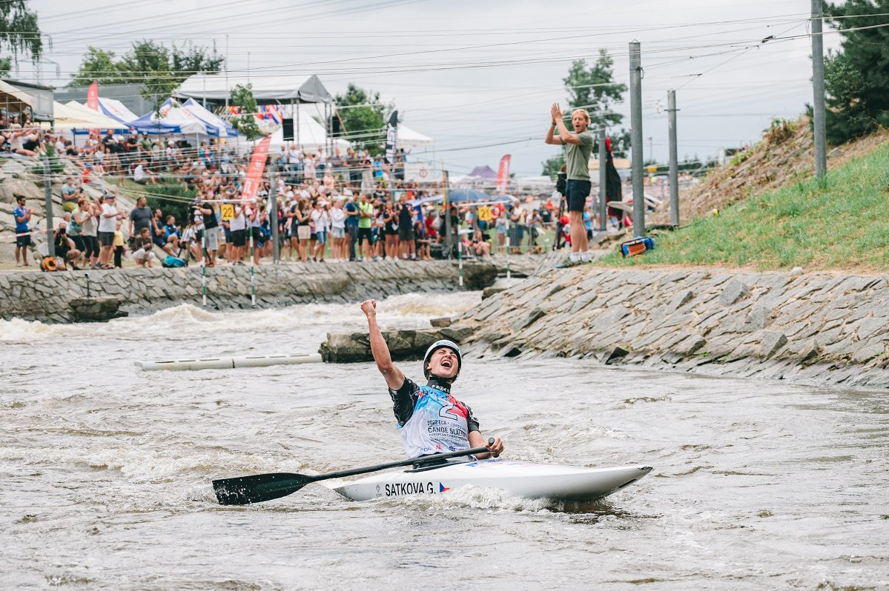
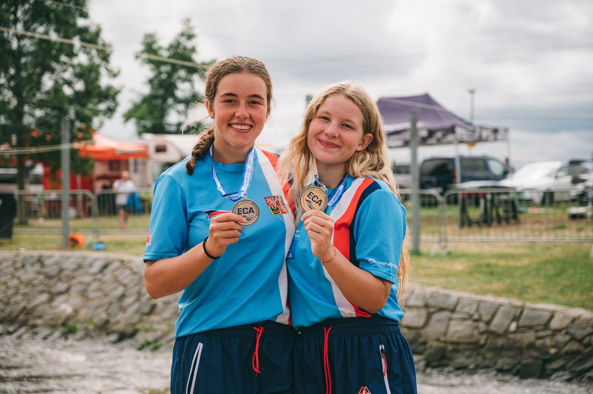

Kanoisté Gabriela Satková a Vojtěch Heger navázali na včerejší úspěchy svých reprezentačních kolegů a před domácím publikem vybojovali další dva tituly mistrů Evropy do 23 let. V této kategorii tak čeští slalomáři nenašli přemožitele – z domácího šampionátu odváží čtyři nejcennější medaile a k tomu stříbro Terezy Kneblové. V juniorské kategorii si pro evropský titul dojela Klára Kneblová, stříbrnou medaili vybojovala Adriana Morenová.
Čeští vodní slalomáři na mistrovství Evropy juniorů a závodníků do 23 let opět zazářili. Po včerejším triumfu kajakářů Jakuba Krejčího a Antonie Galuškové přidali dvě zlaté medaile také kanoisté Vojtěch Heger a Gabriela Satková, kterou na stupních vítězů doplnila stříbrná Tereza Kneblová. Všem českým lodím se navíc podařilo probojovat do finále a každá kategorie měla hned trojnásobné zastoupení.
Druhý titul mistra Evropy do 23 let v kariéře vybojoval Heger. „Neskutečně si to užívám. Když jsem dojel do cíle, měl jsem radost, protože čas byl perfektní. Ale do poslední chvíle jsem tomu nevěřil, proto jsem rád, že to nakonec klaplo. Letošní sezona ještě nekončí, ale ta mistrovská byla parádní – finále na dospělém mistrovství světa a dvě medaile na šampionátech do 23 let. Je to vážně úžasné.“


Adam Král bral v elitním desetičlenném finále pátou příčku, Martin Kratochvíl skončil devátý.
Obrovskou radost po projetí cílem ve finále kanoistek neskrývala úřadující vicemistryně světa do 23 let Gabriela Satková, byť ještě musela čekat na výkon vítězky semifinále. Andořanka však chybovala a čtvrtý titul pro český tým byl na světě. „Jsem opravdu nadšená, že se to povedlo. Já jsem to vůbec nečekala, i když vím, že to říkám vždycky, ale on to člověk občas vážně nečeká. Přece jen trať není jednoduchá, nervozita hraje značnou roli, tak jsem vždy potěšená, když se to podaří. Jízda byla super, myslím si, že dlouho jsem nepředvedla tak dobrou jízdu a jsem moc ráda, že můžu podium sdílet s Terkou. O to lepší ten výsledek je, když ho můžete sdílet se svou dobrou kamarádkou,“ radovala se Satková, která se svou parťačkou Terezou Kneblovou zopakovala umístění z juniorského mistrovství světa v Krakově 2019.


„Jsem moc ráda, že se nám to podařilo zopakovat. Přiznám se, že to byla moje první normální jízda, kterou jsem letos zvládla zajet, protože to byl hodně hektický rok hlavně po psychické stránce,“ přiznala Kneblová, která loni závodila v juniorkách a letos je součástí reprezentace do 23 let. „Hodně jsem se toho bála, je to něco jiného, tato kategorie je o level jinde. Jsem ráda, že se mi to takhle povedlo, a navíc v Česku – o to je to lepší,“ dodala stříbrná medailistka.
Eva Říhová zaznamenala ve finále dvousekundovou penalizaci, která ji z bronzového stupínku odsunula na pátou příčku. „Mrzí mě to, medaile byla opravdu kousíček a zase se opakuje to, co na mistrovství světa v Ivree – jedna chyba a páté místo. Je to škoda, jinak ta jízda byla opravdu krásná,“ uvedla Říhová.
Velké nadšení panovalo ve finále juniorských kanoistek. Vítězka semifinále Klára Kneblová nedala soupeřkám šanci a na trati zcela dominovala – cílem projela s devítisekundovým náskokem na druhou Češku Adrianu Morenovou. „Včerejší čtvrté místo bylo sice krásné, ale jízda nebyla taková, jakou bych si přála. Dnešní výkon mi vynahradil všechny bolesti, které za ten rok byly. Jelo se mi skvěle, kromě chvilkové ztráty kontroly u branky číslo osm,“ popsala Klára Kneblová, jejíž starší sestra Tereza vybojovala medaili zhruba hodinu před ní. „Byla jsem nadšená, že má ségra medaili a přála jsem si, abychom to zažily znova, i když jsme letos už v jiné kategorii. Teď ji máme a je to úžasné,“ dodala novopečená juniorská mistryně Evropy, vedle níž stála na stupních vítězů stříbrná Adriana Morenová. „Jsem šťastná. Po kvalifikaci jsem nebyla v dobrém rozpoložení, ale jak jsem zajela semifinále, tak to ze mě opadlo a ve finále už se to podařilo,“ těšilo Morenovou. Včerejší stříbrná medailistka Olga Samková chybovala a skončila sedmá.


Juniorští kanoisté se nevyvarovali trestných doteků, které je odsunuly ze stupňů vítězů. Nejlepším Čechem byl čtvrtý Michal Urban. „Jízdu hodnotím kladně, protože i přes to, jaký jsem měl stres na startu a po prvních bránách, kde jsem udělal velkou chybu, jsem to dokázal udržet a snažil se zrychlit v prostřední části. Dva šťouchy jsou ale moc,“ zhodnotil Urban. Pátý skončil Lukáš Kratochvíl, osmý Tomáš Větrovský.
Evropský šampionát v Českých Budějovicích dnes ukončí finále v extrémním slalomu.